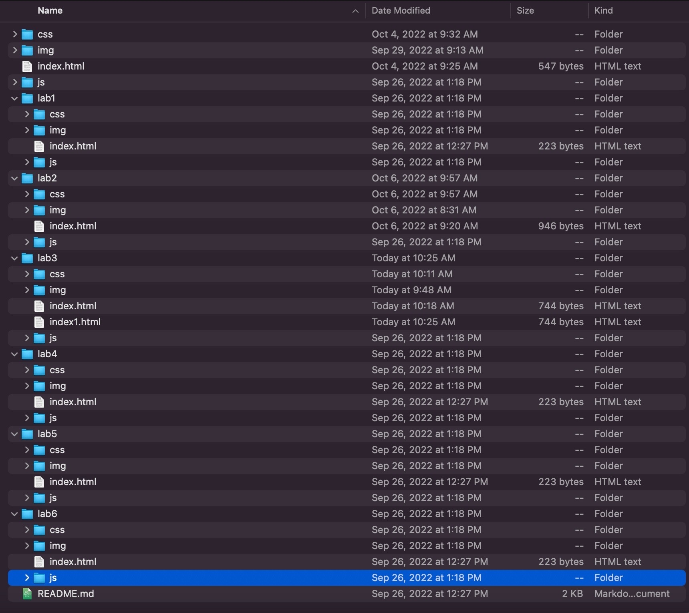

This lab was to help me understand how to create and manage the index.html files better.
I did find it quite simple because one way I could make another index.html was to duplicate it. However, after deleting the old codes from before, I restarted with a blank index page.
Results